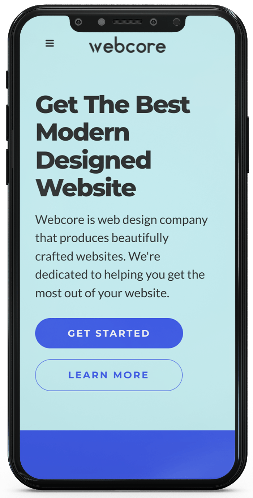
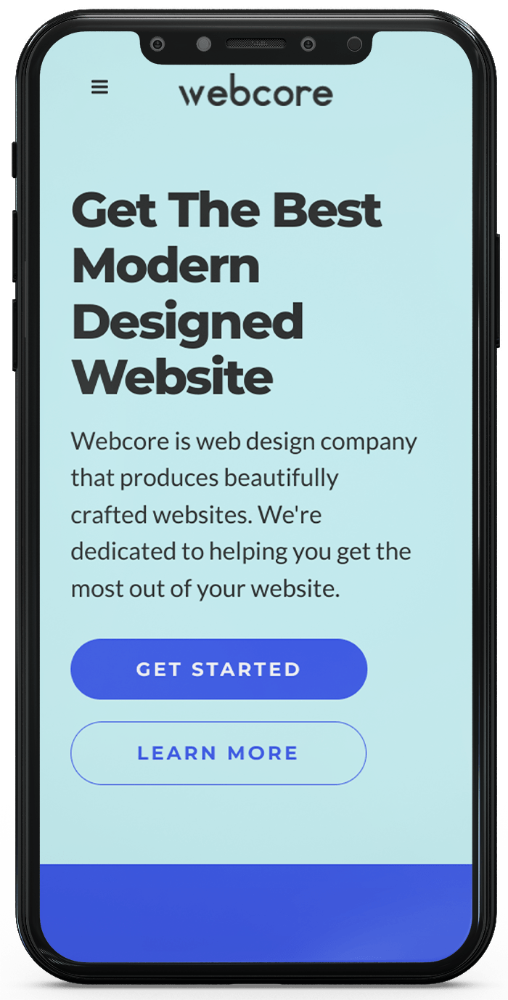
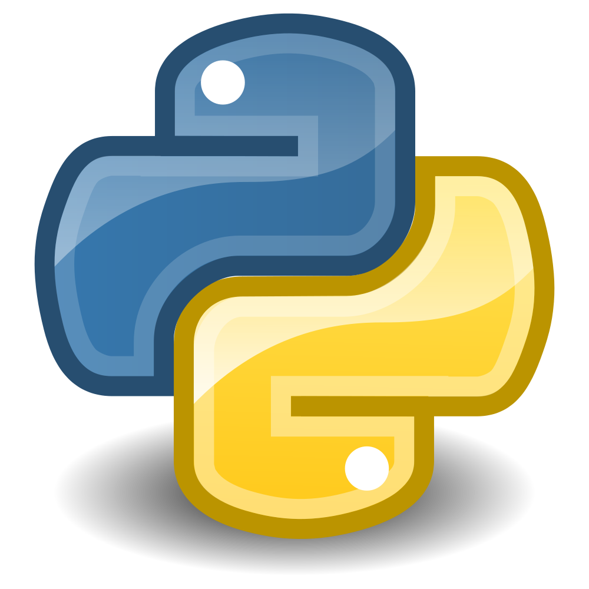

Quick Bio
I'm passionate about programming web applications with django framework as my main tool. I've made a runsheet and scheduling web app for banks and I enjoy the coding with minimal syntax and the structure of the project that django provides. I'm also fascinated in developing engaging UIs and animations with css. I likewise design websites with wordpress in my business as wordpress is easier to make websites fast through templates and this makes it cheaper to the customer to have a footing in the online market.
Take a look at my work
webcore.co.ke
 

A website for my company to provide online exposure on my services and work. You can find more websites I have designed using Wordpress by going to the projects page.
Technologies used: Wordpress (PHP)
Runsheet Web app
Source Code
A full stack application for runsheet management and shift scheduling for bank operations.
Technologies used: Django, HTML, CSS
Store Web app
Source Code
An e-commerce web application that gets its' products from the Aliexpress API, makes payment through Paypal & MPesa, and is hosted in AWS EC2.
Technologies used: Django, JQuery, Bootstrap, AWS
Skills and Qualifications
-  Python - My focus is on Python based web development, and this programming language unifies the process from database to user-interface with one, universal language. Python is a good language to learn and start with as it's uses are broad in the software development world. I love it for it's simplicity and readable syntax.
-
 Django -
I am competent in the latest, best, and enterprise level practices used in this frontend framework. It is the most used Python web framework that encourages rapid development and clean, pragmatic design. Built by experienced developers, it takes care of much of the hassle of web development, so you can focus on writing your app without needing to reinvent the wheel.
Django -
I am competent in the latest, best, and enterprise level practices used in this frontend framework. It is the most used Python web framework that encourages rapid development and clean, pragmatic design. Built by experienced developers, it takes care of much of the hassle of web development, so you can focus on writing your app without needing to reinvent the wheel.
-
 Vue Js -
Vue is my main frontend JavaScript framework. It's simpler with a lot complex configuration done for you thus making developing code faster, and I like it's code design. It has many supporting libraries and a huge community behind it.
Vue Js -
Vue is my main frontend JavaScript framework. It's simpler with a lot complex configuration done for you thus making developing code faster, and I like it's code design. It has many supporting libraries and a huge community behind it.
- Wordpress - Wordpress is a free and open-source content management system written in PHP and paired with MySQL database. It has everything you need to build complete websites fast. From templates/themes to Built-in SEO and flexible tools for payments and ecommerce. I also tweak php files to modify or add functionalities to the website.
-
 CSS3 -
CSS is not a difficult language, in fact any developer knows how to use it to some degree. However, many of them don't take the time to dive deep on not only the core concepts, but also the advanced and latest features like I did. My focused study of the language gives me insight into high-performance selectors, complex specifity, and intuitive class naming.
CSS3 -
CSS is not a difficult language, in fact any developer knows how to use it to some degree. However, many of them don't take the time to dive deep on not only the core concepts, but also the advanced and latest features like I did. My focused study of the language gives me insight into high-performance selectors, complex specifity, and intuitive class naming.
-
 JavaScript ES6 -
This latest, stable version of JS is a miracle worker. I like it because it takes the more repetitive and frequently used methods, and shortens them into cleaner, easier code. I use it sparingly to produce a specific result in my website.
JavaScript ES6 -
This latest, stable version of JS is a miracle worker. I like it because it takes the more repetitive and frequently used methods, and shortens them into cleaner, easier code. I use it sparingly to produce a specific result in my website.
-
 Git, Github -
Version control is extremely important, and I use the Command Line to make steady commits to my local and remote repositories, and make sure to include detailed messages with each one. I may not be 'hacker-level' good with the CLI, but I do know how to create new directories, start and return to projects, and push or pull from Github with just a few keystrokes.
Git, Github -
Version control is extremely important, and I use the Command Line to make steady commits to my local and remote repositories, and make sure to include detailed messages with each one. I may not be 'hacker-level' good with the CLI, but I do know how to create new directories, start and return to projects, and push or pull from Github with just a few keystrokes.
My other valuable skills include...
- AWS
- Graphic Design
- Photoshop
- Bootstrap
- Domain registry
- Web Hosting
My History
I have loved technology and computers since childhood, evident on my attendance of computer classes from primary through secondary school to university. My passion is developing web applications and expressing my ideas through coding.
Web Development and Me
I've made an ecommerce website and a Run Sheet management web app with django and many other small projects.
My learning continues every day. I'm always looking for new tricks and tips, and building constantly, even if they are only personal projects for my own development. Aside from that, I have had a handful of real-world clients that I was able to help build websites for, and it has been extremely rewarding.